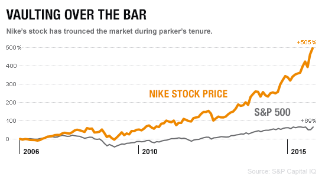
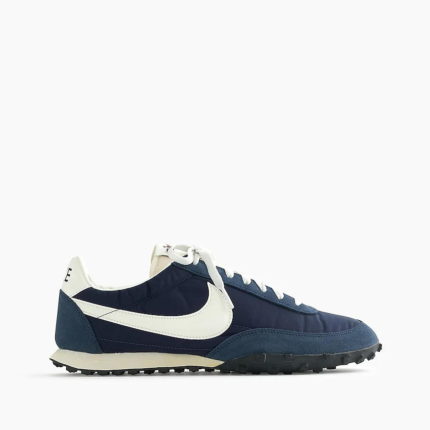
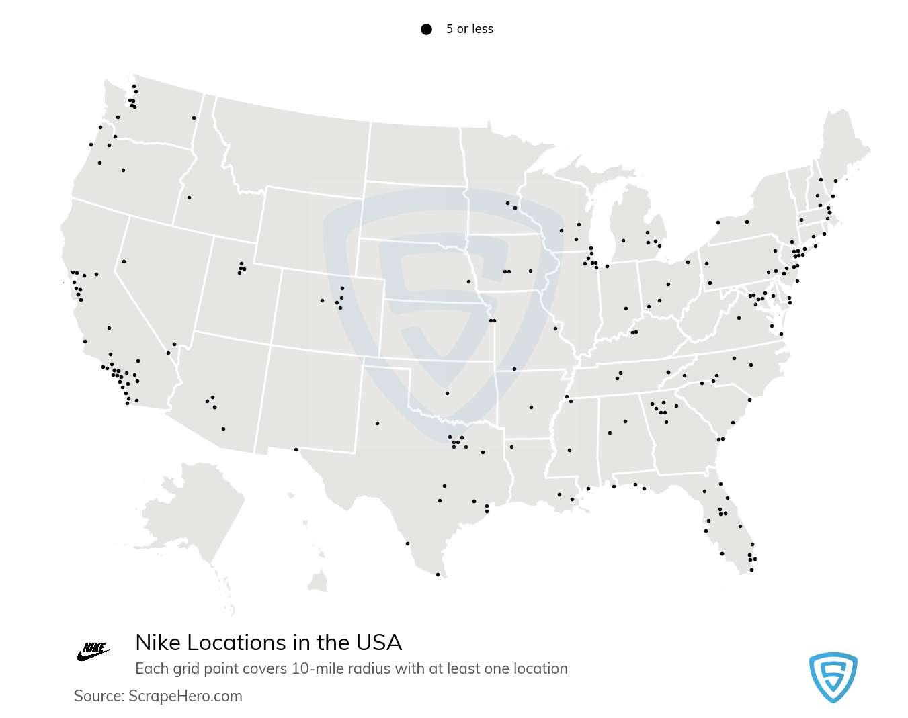
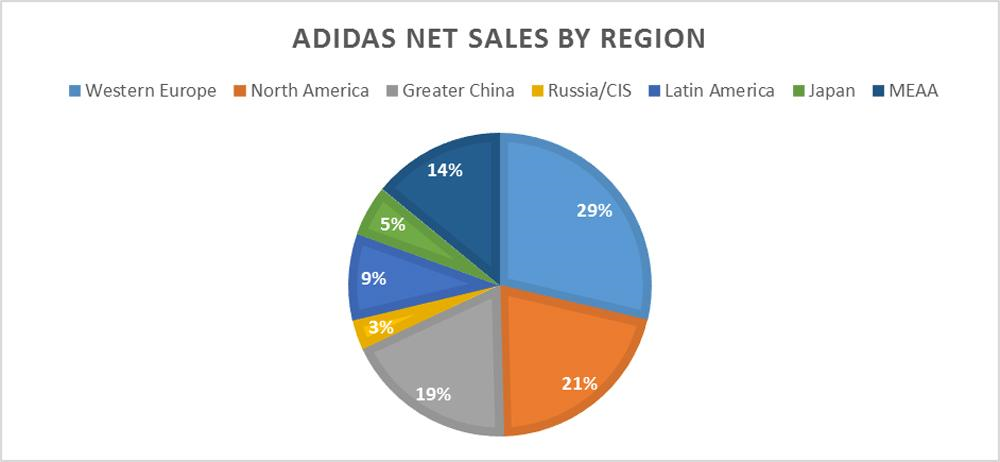
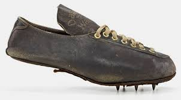
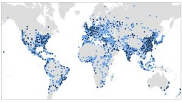

Since Nike has been established, Nike has accumulated a net worth of 34.8 billion dollars. This means that Nike has grown rapidly since it was first started in 1964. This year alone so far, Nike has grossed 37 million dollars.

The first shoe to have been created by nike that was mass produced came out in 1972. The shoe would be known as the Waffle Racer and eventually nicknamed the 'Moon Shoe'. It was also the first Nike shoe to be released with the Swoosh logo.

Nike over the years has been able to establish 1,096 retail stores across the world. Nike has been able to create contracts with 700 shops around the world. Nike has also set up offices in at least 45 countries.

Since the birth of Adidas, their net worth has gorwn to be 16.48 billion dollars, much less than Nike. Adidas was founded in 1949 so it should have had a leg up on Nike.Their past year in revenue, they made 14 million dollars.

The man who gave Adidas its name made his first shoe in Germany in 1920. The shoes were known as the adi dassler's and were actually more of a track shoe than a walk around shoe as we see nowadays. The company known as the "Brand with the Three Stripes" started as soon as 1949.

Over the years, Adidas has set up and establish over 2,300 stores worldwide. Adidas also owns at least 20 of the 36 sports contracts in Conference USA, the MAC and the Sun Belt. The biggest seller is that Adidas has stores in over 160 countries due to its high popularity in places like Europe.
